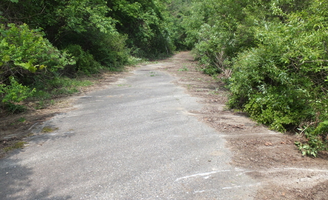
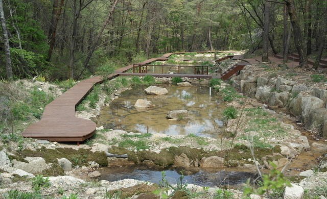

사업목적 :폐도를 활용, 파괴된 개구리의 서식내 대체 서식지 조성을 통한 생태계 먹이사슬 회복 및 건강성 증진
사업목적 :폐도를 활용, 파괴된 개구리의 서식내 대체 서식지 조성을 통한 생태계 먹이사슬 회복 및 건강성 증진- 사업기간 :2012. 4. ~ 2012. 7
- 위 치 :충북 충주시 수안보면 미륵리 일원(산27-1도)
- 사업내용 :도로 아스콘 제거 및 개구리 인공산란장 조성(1,100㎡)
-

사업 전
-

사업 후
폐도복원 생태습지 조성사업
사업목적 :폐도를 활용, 파괴된 개구리의 서식내 대체 서식지 조성을 통한 생태계 먹이사슬 회복 및 건강성 증진 사업기간 :2012. 4. ~ 2012. 7 위 치 :충북 충주시 수안보면 미륵리 일원(산27-1도) 사업내용 :도로 아스콘 제거 및 개구리 인공산란장 조성(1,100㎡)사업 전
사업 후